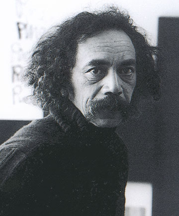

Biography
Ralph Hotere was an important Māori painter and sculptor. He was known for his minimal Black paintings, composed of simple bands or crosses of color laid over dark backgrounds. One of eleven children, Hone Papita Raukura (Ralph) Hotere was born in Mitimiti, Northland, in 1931. He was educated at Hato Petera College and Auckland Teachers' College, before moving to Dunedin in 1952 to specialise in art. After a spell in the Bay of Islands as an arts advisor for the Education Department, Ralph was awarded a New Zealand Art Societies Fellowship to study in London at the Central School of Art in 1961. His time in England proved to be pivotal to his development as an artist.
Ralph was then awarded the Frances Hodgkins Fellowship and moved to Dunedin permanently in 1969. He died on 24 February 2013, aged 81.